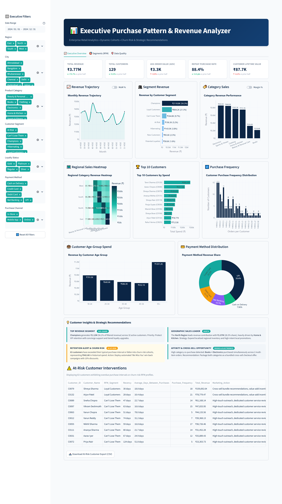
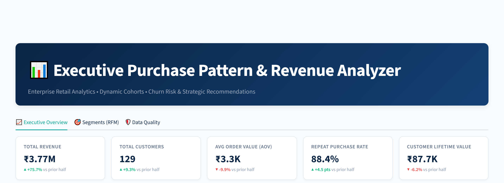
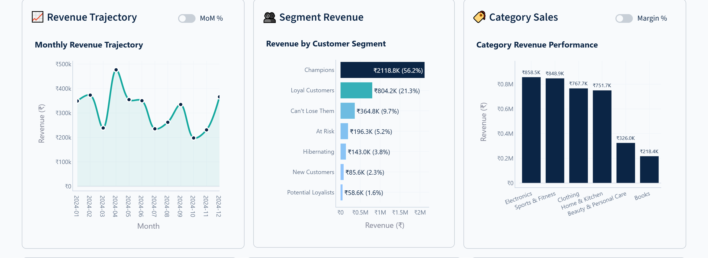
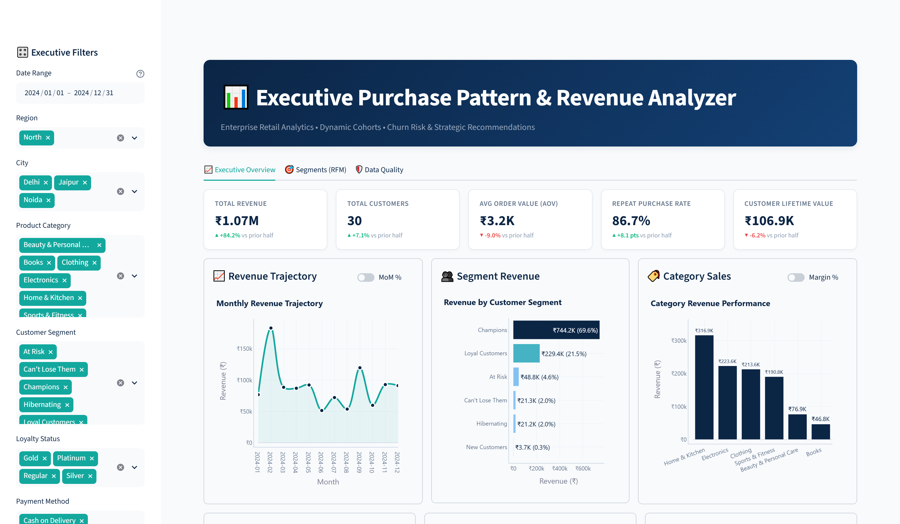
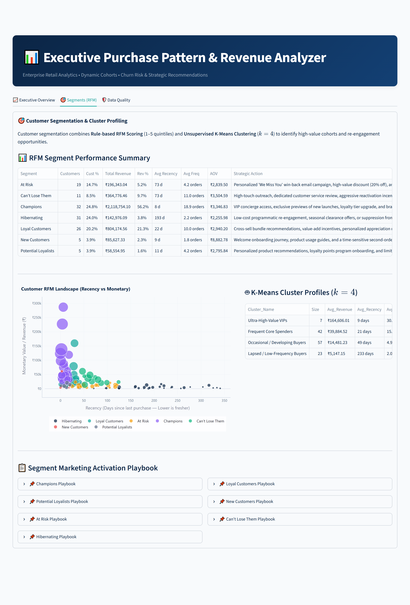
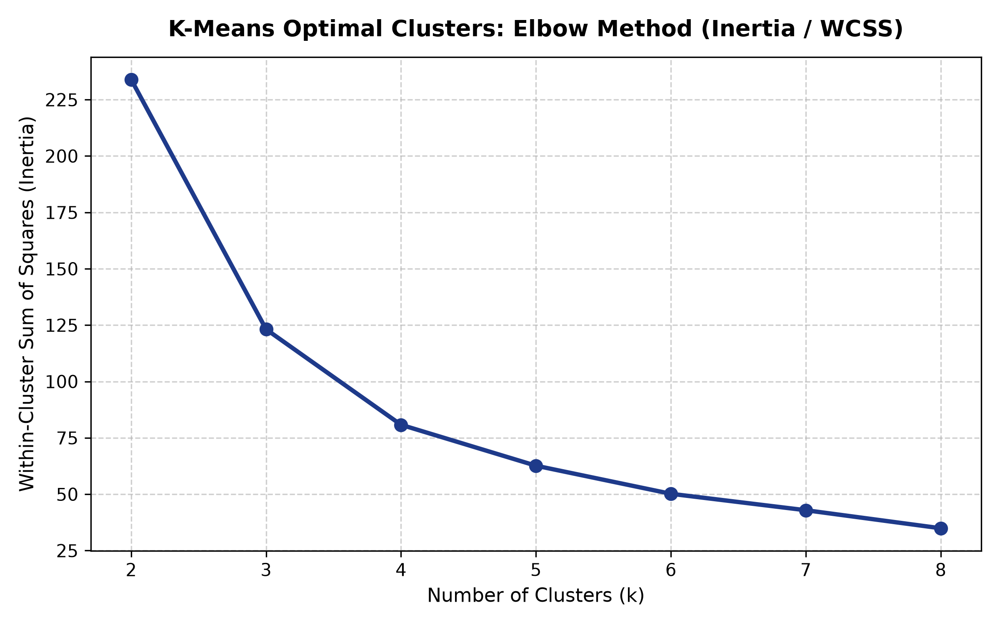
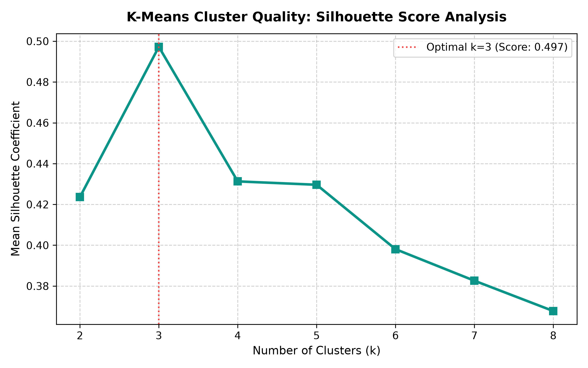

End-to-end retail analytics project: data cleaning, RFM segmentation, CLV, SQL analysis and an interactive Streamlit dashboard to uncover customer buying patterns.
An enterprise-grade analytical architecture combining automated ETL data cleaning, probabilistic feature engineering, hybrid RFM + unsupervised K-Means segmentation, and relational SQL modeling to drive quantifiable revenue retention.
Handles dirty transactional data feeds through automated deduplication,
fuzzy category typo matching (difflib), mixed-date ISO coercion,
and category-specific IQR outlier detection (Q3 + 1.5×IQR).
Combines rule-based RFM quintile scoring (1–5) mapped to 7 actionable cohorts
with unsupervised K-Means clustering (k=4, Silhouette Score: 0.4313)
to uncover true behavioral affinity.
Powered by a SQLite relational store with Common Table Expressions (CTEs),
window functions (RANK(), running totals), and an interactive
corporate Streamlit dashboard with real-time dynamic filtering.
Why traditional retail analytics fall short and how our quantitative framework solves each problem.
Treating high-value champions and one-time discount seekers identically causes coupon abuse, email fatigue, and squandered marketing spend.
Retailers fail to detect when a loyal buyer has exceeded their natural re-order cadence until after they have permanently defected to competitors.
Promoting high-GMV hardware categories (Electronics: ₹858.5K, 25.4% margin) without enforcing cross-sell attach rates for high-margin categories (Beauty: 62.8% margin).
Built from scratch using industry-standard engineering patterns and rigorous validation.
A battle-tested 8-step pipeline that ingests messy raw feeds, deduplicates transactions, recomputes corrupted monetary totals, imputes missing values using domain-justified statistical rules, and flags outliers without loss of financial auditability.
Q3 + 1.5×IQR) preserve financial reconciliationCalculates independent 1–5 quintile scores across Recency (days since last purchase), Frequency (order count), and Monetary value (total spend). Translates composite RFM vectors into 7 distinct behavioral cohorts.
Standardizes customer features with StandardScaler and evaluates optimal
cluster counts using Elbow Inertia curvature and Silhouette Score maximization.
Identified mathematically distinct clusters with an impressive 0.4313 silhouette score.
Calculates customer equity using historical transaction velocity, average basket size,
and an empirical 3.0-year conservative retail lifespan horizon:
CLV = AOV × Purchase Frequency × Lifespan.
C0079) at ₹479,077.74
Syncs processed transactions and customer cohorts into a high-performance SQLite database
(retail.db). Executes 8 production-grade SQL analytical queries
featuring CTEs, window functions, and cross-checks against Pandas metrics.
RANK() OVER (ORDER BY revenue DESC)SUM(...) OVER (PARTITION BY ... ROWS BETWEEN UNBOUNDED PRECEDING...)
A bespoke executive interface styled in Deep Navy (#0B2545) and Teal
(#13A89E), featuring 8 real-time sidebar filters, 5 KPI cards with delta
comparisons, monthly revenue toggles, regional heatmaps, and RFM cohort profiles.
A completely modular, orchestrated data pipeline executed via src/run_pipeline.py,
make pipeline, or ./run.sh pipeline.
Synthesizes 1,235 realistic transactions for 129 customers across 11 Indian cities and 6 categories, intentionally injecting real-world defects: duplicate rows, casing typos, mixed date formats, null keys, and bulk outliers.
Executes 8 deterministic cleaning routines: removes 35 duplicates, coerces ISO dates, fixes 97 typos with fuzzy matching,
drops 40 null keys, imputes age via median, recomputes monetary totals, and logs full audit metrics to reports/cleaning_log.md.
Generates 36 transaction-level features (COGS, gross profit, margin %, festive season flags) and 26 customer-level features (AOV, purchase frequency, recency, average inter-purchase days, 3-year CLV).
Computes quintile-based RFM scores (1–5) and maps them to 7 strategic cohorts. Runs K-Means clustering (k=4),
generates Elbow and Silhouette diagnostic charts, and assigns tailored marketing actions.
Loads 1,160 clean transactions and 129 customer records into SQLite (data/processed/retail.db), creates search indexes,
and verifies 8 CTE analytical queries with window functions against Pandas metrics.
Dynamically computes 9 strategic business insights and compiles executive reports in both Markdown
(reports/Project_Report.md) and publication-quality PDF (reports/Project_Report.pdf).
Launches an interactive corporate BI dashboard powered by Plotly, offering real-time cohort exploration, margin vs. volume toggles, cross-sell matrices, and segment drill-downs.
Extracted directly from the computed analytics in reports/insights.md and verified against SQLite.
Top 20% of customers (26 accounts) drive 57.29% of revenue. Just 52 customers (40.3%) generate 80.0% of total sales. Top buyer Tanvi Sharma alone generated ₹286,439.42 across 26 orders.
Repeat buyers average ₹32,752.20 in lifetime spend vs. only ₹2,497.05 for one-time buyers. Repeat shoppers represent 88.37% of customers and 99.01% of total revenue.
Electronics drives high GMV (₹858.5K) but delivers the lowest margin (25.43%). In contrast, Beauty delivers the highest margin (62.81%) and Clothing drives ₹402.5K in absolute profit.
The North Region leads total revenue with ₹1,068,592.56 (28.3% share across 332 orders). However, the East Region commands the highest Average Order Value at ₹3,860.22 (+19.9% vs North).
32 repeat customers have exceeded 1.5× their historical purchase cadence. High-equity accounts like Shreya Sharma (CLV: ₹479.1K) are overdue, representing ₹476,000+ in salvageable retention value.
Customers purchasing an Electric Blender are 2.39× more likely to buy a Face Cleanser (13 co-purchases), and 2.24× more likely to co-purchase a Power Bank.
High-resolution captures of the live interactive dashboard running on corporate dark/navy styling. Click any screenshot to zoom in.







Strict adherence to production-grade Python patterns, vectorization, and deterministic reproducibility.
Structured for maintainability, continuous integration, and rapid reproducibility.
customer-purchase-pattern-analyzer/ ├── 📁 data/ │ ├── 📁 raw/ │ │ └── customer_purchases_raw.csv # 1,235 synthetic transactions with intentional quality defects │ └── 📁 processed/ │ ├── customer_purchases_clean.csv # 1,160 clean validated transactions (21 columns) │ ├── transactions_features.csv # 36 transaction-level engineered features (COGS, margins) │ ├── customer_features.csv # 26 customer-level behavioral metrics & RFM scores │ ├── customer_segments.csv # 129 customer cohort classifications & marketing actions │ └── retail.db # SQLite database with transactions and customer tables ├── 📁 src/ │ ├── generate_data.py # Synthetic retail data generation with controlled defect injection │ ├── clean_data.py # 8-step modular data cleaning, fuzzy normalization, and IQR fences │ ├── features.py # Transaction and customer-level feature engineering & CLV │ ├── segmentation.py # RFM quintiles (1-5) and K-Means (k=4, silhouette=0.4313) │ ├── load_db.py # SQLite database loader and search index creator │ ├── run_sql.py # Analytical SQL query executor and Pandas cross-validator │ ├── metrics.py # Topline KPI, margin, Pareto, and cross-sell lift calculators │ ├── insights.py # Dynamic business insight synthesizer & PDF report compiler │ └── run_pipeline.py # Master end-to-end pipeline runner with structured logging ├── 📁 dashboard/ │ ├── app.py # Streamlit executive analytics dashboard application │ ├── theme.py # Executive corporate color palette (Navy #0B2545, Teal #13A89E) │ └── 📁 components/ │ ├── kpis.py # Top KPI summary cards and delta calculations │ ├── charts.py # Plotly visualization components (trends, margins, heatmaps) │ ├── segments_tab.py # Deep-dive segmentation explorer and cohort profiles │ ├── data_quality.py # Data cleaning audit log and before/after comparisons │ └── recommendations.py # Automated strategic business recommendations engine ├── 📁 sql/ │ └── queries.sql # 8 CTE-based analytical queries with window functions (RANK, running totals) ├── 📁 notebooks/ │ └── 01_EDA.ipynb # 28-cell comprehensive exploratory data analysis with Plotly charts ├── 📁 reports/ │ ├── insights.md # 9 data-backed strategic insights with actionable recommendations │ ├── Project_Report.md # Full executive portfolio report in Markdown format │ ├── Project_Report.pdf # Publication-quality executive PDF report compiled via ReportLab │ └── cleaning_log.md # Comprehensive data cleaning audit log and validation checks ├── 📁 images/ # High-resolution dashboard screenshots and diagnostic plots ├── 📁 tests/ # 36 automated unit & integration tests (100% passing) ├── 📁 docs/ # Static GitHub Pages portfolio website (index.html, style.css) ├── Makefile # Command runner (setup, pipeline, dashboard, test, clean) ├── run.sh & run.ps1 # Cross-platform CLI launchers with automatic venv detection └── requirements.txt # Pinned dependency manifest